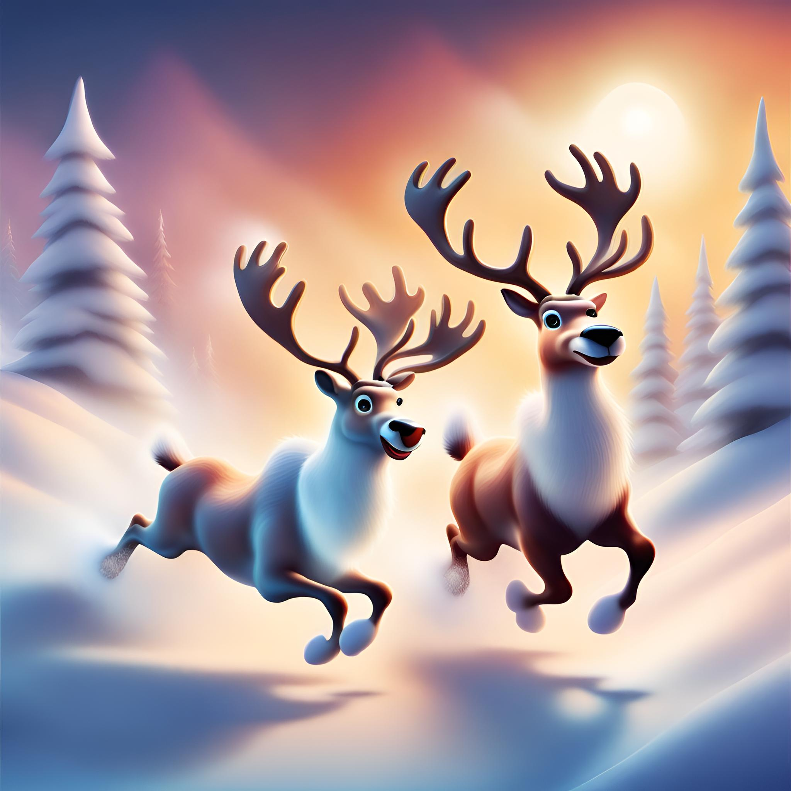

The Snowmen

Hannah and Meghan landed in the snow-filled glade, their reindeer hooves barely making a sound.
Ahead they saw the snowmen gathering in a circle surrounding a trembling Christmas elf. The snowmen had their snowballs at the ready, and Hannah and Meghan could see they were slushy and icy cold.
“Please, no!” cried the little elf with a terrified jingle.
With a determined gleam in their reindeer eyes, Hannah and Meghan galloped towards the snowmen. With a swift shake of their antlers, Hannah created a shield of swirling snow, startling the snowmen. Meghan charged forward blocking the incoming barrage and rescuing the elf from the snowy assault.
“Oh thank you!” exclaimed the elf, “these snowmen are a menace”.
“Quickly, hop on” said the Hannah, scooping the elf up onto Meghan’s back.
The mischievous snowmen watched in awe as Hannah, Meghan and Jingleberry flew away, leaving them behind in the powdery white snow.
“I’m Jingleberry by the way” said the elf, clutching to Meghan’s velvety antlers. “Thank you for saving me!” he continued, with a jingle and a smile. “Do you think you could drop me back to Santa’s workshop?”
Feeling the Chocolate Reindeer magic begin to fade, the sisters knew they would have to land soon. They flew over the night-time forest towards to glowing lights and far-off singing from Santa’s workshop.
Oh look! said Jingleberry, pointing excitedly. Far below, there was a beautiful wooden sleigh nestled among the tall evergreen trees. “I think that’s Santa’s sleigh” he jingled merrily. “But if that’s Santa’s sleigh, where are the reindeer?” wondered the two sisters.